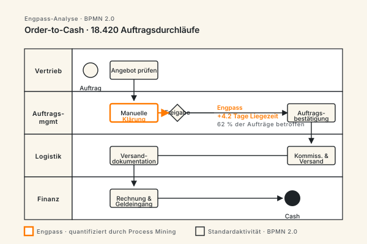

Geschäftsprozesse › messbar besser machen.
CX-Experts bringt Ihre Geschäftsprozesse vom Engpass zur sauberen Soll-Architektur. Ist-Aufnahme, Schwachstellenanalyse, Soll-Modellierung und Umsetzung — kombiniert mit Lean-, Six-Sigma- und BPMN-Methoden. Für deutschen Mittelstand bis DAX-Konzern, DACH-weit, mit Sitz in Köln-Mülheim.
Die meisten Prozessprojekte enden im Aktenordner — nicht im Betrieb.
Die Ursache ist selten der Prozess selbst. Es sind wiederkehrende Engpässe: zu wenig Datenbasis, zu viel Theorie, fehlende Anbindung an die operative Verantwortung. Wir kennen sie aus über 100 Prozessmandaten.

Ist-Aufnahme bleibt subjektiv
Workshops liefern Wahrnehmungen, keine Fakten. Ohne quantitative Vermessung (Process Mining, Zeitstudien, Kennzahlen) verirrt sich die Analyse in Anekdoten — und die Lösung schlägt am realen Problem vorbei.
Soll-Modelle landen in der Schublade
BPMN-Diagramme entstehen in Beratungsphasen, werden präsentiert und nie umgesetzt. Der Übergang von Soll-Modell zu echter Prozessänderung fehlt — und damit die Wirkung.
Lean-Tools ohne Lean-Kultur
Wertstromanalyse, Kaizen, 5S funktionieren nur, wenn die Organisation sie trägt. Ohne Change-Management bleibt es bei Plakaten und Workshops — der Prozess kehrt zum Ausgangszustand zurück.
KPIs ohne Wirkung
Es werden Durchlaufzeit, First-Pass-Yield, OEE gemessen — aber niemand handelt darauf. Wir designen KPI-Systeme, die zu Entscheidungen führen, nicht zu Reports.
Was 127 Prozessmandate über fünf Jahre ergeben haben.
Wir haben unsere Mandate der Jahre 2020 bis 2025 ausgewertet: 127 abgeschlossene Prozess- und BPM-Engagements im DACH-Raum, von Mittelstand-KMU mit 80 Mitarbeitern bis DAX-Tochter mit 4.000. Die Zahlen unten sind Mediane, keine Best-Case-Werte. Sie zeigen, was bei realer Umsetzung tatsächlich ankommt — nicht, was in einer Slide-Präsentation versprochen werden kann.
Vier Leistungsfelder — von der Diagnose bis zur Verankerung.
Wir liefern den gesamten Bogen aus einer Hand: quantitative Ist-Aufnahme, Soll-Design, Umsetzung im Betrieb und Verankerung über Governance + Schulung. Keine Übergaben, keine Lücken.
Prozessanalyse & Diagnostik
Quantitative Ist-Aufnahme über Process Mining (Celonis, UiPath, Signavio), Zeitstudien, Datenanalysen in ERP/CRM/WMS. Output: Engpass-Heatmap, Lead-Time-Verteilung, Varianten-Analyse — Fakten statt Wahrnehmung.
Soll-Architektur & BPMN-Modellierung
Soll-Prozesse in BPMN 2.0, abgestimmt mit Fachbereich, IT und Compliance. Inklusive Variant-Reduktion, Standardisierung und expliziter Schnittstellen-Beschreibung. Mit klarem Migrationspfad — nicht ein Zielbild, sondern ein Umsetzungsplan.
Umsetzung & Operative Begleitung
Wir bleiben in der Umsetzung — als Programm-Manager, Interim-Process-Owner oder Coaches. Lean-Methodik (Wertstrom, Kaizen, 5S) wird in Ihren Teams etabliert, nicht delegiert. Inklusive Workflow-Tooling (Signavio, Camunda, ARIS).
BPM-Governance & Kennzahlensystem
Process Owner, KPI-Dashboard, Review-Zyklus. Nach der Optimierung verfällt nichts — der Prozess bleibt unter Kontrolle. Anbindung an SAP, Microsoft Power Platform oder Custom-BI je nach Stack.
Fünf Phasen — jede mit klarem Output, jede einzeln beauftragbar.
Sie entscheiden nach jeder Phase, ob die nächste sinnvoll ist. Kein 12-Monats-Block. Schrittweise Verbindlichkeit, schrittweise Wertschöpfung.
Lagebild
Prozesslandkarte, betroffene Systeme, vorhandene KPIs, Stakeholder. Output: 15-seitiges Lagebild mit Prozessen, die den größten Hebel haben.
Prozessanalyse
Process Mining oder Zeitstudie für 3–5 Kernprozesse. Engpass-Heatmap, Varianten-Analyse, Schwachstellenkatalog mit Wirkungs-Schätzungen.
Soll-Design
BPMN-Soll-Modelle, Migrationspfad, RACI-Matrix, KPI-Definition. Workshops mit Fachbereich und IT — keine Beratungs-Folien, sondern abgenommene Soll-Architektur.
Pilotierung & Rollout
Erster Prozess geht in den optimierten Betrieb. Kaizen-Reviews, KPI-Tracking, Coaching der Process Owner. Sukzessiver Rollout auf weitere Prozesse.
Verankerung & Übergabe
BPM-Governance ist etabliert, KPI-Dashboard läuft, Process Owner sind eigenständig. Optional bleiben wir als Sparringspartner für weitere Wellen.
Von der Diagnose zur Wirkung — in fünf sichtbaren Schritten.
Jede Phase produziert einen abgegrenzten Output, jeder Output ist einzeln beauftragbar. Kein 12-Monats-Block, sondern fünf entkoppelbare Wertschöpfungs-Schritte mit klarer Verantwortung.

CX-Experts im Vergleich zu Konzern-Beratung, Inhouse-Initiative und Einzelberater.
Welcher Beratungs-Typ zu Ihrer Situation passt, hängt von Volumen, Tiefe und Eigenkapazität ab. Diese Tabelle macht die typischen Kompromisse explizit — nicht aus Verkaufslogik, sondern weil zwei von zehn Anfragen besser bei einer anderen Beratungsform aufgehoben sind.
| Dimension | CX-Experts | Konzern-Beratung (MBB / Big4) | Inhouse-Initiative | Einzelberater |
|---|---|---|---|---|
| Berater-Seniorität ab Tag 1 | ✓ Senior-Teams | ✗ Junior-Pyramide | Variabel | ✓ |
| Vor-Ort-Präsenz im Mittelstand | ✓ Wochenweise Standard | Nur in Großmandaten | Permanent | Begrenzt |
| Implementierungs-Begleitung | ✓ Bis Verankerung | Selten, Aufpreis | ✓ | Teilweise |
| Tagessatz-Range (EUR netto) | 1.600 — 2.400 | 2.800 — 4.500 | Vollkosten ähnlich | 1.200 — 2.000 |
| BAFA-Förderfähigkeit (KMU) | ✓ | ✗ Listen-Beratung selten | N/A | Häufig ✓ |
| Method-Set (Lean / Six Sigma / BPMN / Mining) | Vollständig | Vollständig | Variabel | Eine Tiefe |
| Skalierung auf Großmandat > 30 Berater | Bedingt | ✓ | Nein | ✗ |
| Eigenkapazität des Mandanten erforderlich | Gering | Mittel | Hoch | Mittel-Hoch |
Wo Prozessoptimierung bei unseren Mandanten Wirkung zeigt.
Eine Auswahl der Prozesse, die wir wiederkehrend optimieren. Der höchste Hebel liegt fast immer dort, wo Standardprozesse mit hoher Frequenz aufeinander treffen — und wo bisher manuell viel kompensiert wird.
Purchase-to-Pay
Bestellanforderung bis Zahlung. Typische Effekte: Durchlaufzeit -40%, Touchless-Quote +25 Prozentpunkte, Maverick Buying messbar reduziert.
Order-to-Cash
Auftrag bis Geldeingang. Reduktion von DSO, weniger manuelle Rückfragen, automatisierte Klärfälle.
Customer Onboarding
Vom Vertragsabschluss bis zum produktiven Kundenstatus — Onboarding-Zeit halbieren, KYC sauber digitalisieren.
Schadenbearbeitung
Versicherung & Banking: Claim-Triage, dunkelverarbeitete Standardfälle, Eskalations-Routing nur bei echtem Bedarf.
Mitarbeiter-Onboarding
Vom Vertragsversand bis Arbeitsplatzbereitstellung — Schnittstelle HR, IT, Facility, Vorgesetzter sauber geregelt.
Auftragsdurchlauf Fertigung
Auftrag bis Auslieferung in der Fertigung. OEE-Hebel, Variant-Reduktion, Lean-Linien-Design.
Monatsabschluss
Day-1- bis Day-5-Reporting beschleunigen — Standardisierung, parallele Verarbeitung, klare Verantwortungen.
Risiko- & Audit-Prozesse
Strukturierte interne Kontrollen, automatisierte Audit-Trails, Reduktion von Doppelarbeit.
Wo wir Prozessoptimierung wiederkehrend liefern.
Prozessmuster unterscheiden sich erheblich nach Branche. Was im Maschinenbau funktioniert, scheitert im Finanzwesen am regulatorischen Rahmen. Hier die Branchen, in denen wir wiederkehrend mandatiert sind.
Produzierende Industrie & Maschinenbau
Auftragsabwicklung, Produktion, Wartung. Typische Wirkung: 20–35 % Durchlaufzeit-Reduktion, OEE +5–10 Prozentpunkte, Lean-Linien-Design mit messbarem Output.
Logistik & Supply Chain
Wareneingang, Kommissionierung, Versand, Reklamation. Schwerpunkt auf Schnittstellen ERP/WMS/TMS und Touchless-Quoten bei Standardvorgängen.
Banken & Versicherungen
Antrag, Underwriting, Schaden, KYC. Regulatorische Anforderungen werden ab Phase 1 mitgedacht — BaFin-fest, MaRisk-konform.
Öffentlicher Sektor & Verwaltung
Antragsbearbeitung, Genehmigungsprozesse, Bürgerschnittstellen. Schwerpunkt auf Standardisierung, Digitalisierungs-Anschluss und transparenter Service-Qualität.
Energie & Versorger
Netzanschluss, Zählerwesen, Abrechnung. Schnittstellen zur EEG-/Regulierungs-Berichterstattung, Hochvolumen-Prozesse mit Skaleneffekt.
Mittelstand übergreifend
Drei Kandidaten immer wieder: Purchase-to-Pay, Order-to-Cash, Monatsabschluss. Hier liegt der schnellste, sichtbarste Hebel — gut messbar, gut bezahlbar.
Es gibt viele Beratungen mit BPM-Logo. CX ist anders aufgestellt.
Methodisch breit, dogmatisch nicht
Lean, Six Sigma, BPMN, Theory of Constraints, RPA — wir kombinieren je nach Problem. Wir verkaufen kein einzelnes Framework, sondern das passende Werkzeug für Ihre Situation.
Process Mining ab Tag 1
Wo Daten vorhanden sind, arbeiten wir quantitativ — nicht über Workshop-Wahrnehmung. Celonis, Signavio Process Intelligence, UiPath Process Mining je nach Stack.
Wir bleiben in der Umsetzung
Klassische Berater liefern Soll-Modelle und ziehen ab. Wir bleiben als Process Owner Interim, Programm-Manager oder operative Coaches — bis der Prozess in Ihrer Organisation lebt.
Anbindung an IT realistisch geplant
Soll-Prozesse, die ohne IT-Realisierung nicht funktionieren, planen wir gemeinsam mit Ihrer IT. Kein BPMN-Diagramm ohne Schnittstellen-Plan, kein Workflow ohne Tooling-Entscheidung.
Schulung und Befähigung statt Abhängigkeit
Wir trainieren Ihre Process Owner so, dass Sie nach der Übergabe ohne uns weiterkommen. Wir wollen keine Daueraufträge — wir wollen eine funktionierende Prozess-Organisation hinterlassen.
Tooling-unabhängig
Camunda, Signavio, ARIS, Microsoft Power Automate, SAP Signavio — wir wählen nach Anforderung. Keine Tool-Partnerschaft, die unsere Empfehlung verzerrt.
Drei Standards, die wir verbindlich anwenden.
Prozessoptimierung lebt von gemeinsamer Sprache und klaren Methoden. Wir arbeiten mit etablierten Standards — damit Ergebnisse audit-fest sind und in Ihrer Organisation weiterleben.

BPMN 2.0
Notations-Standard für Prozessmodellierung. Eindeutig, austauschbar zwischen Tools, von Auditoren und ISO-Zertifizierern akzeptiert. Alle unsere Soll-Modelle in BPMN.
Lean Six Sigma
DMAIC für Verbesserungsprojekte, Lean-Werkzeuge für Verschwendungs-Reduktion. Schwarzgurt-Zertifizierungen im Team, kombiniert mit echter Industrie-Erfahrung.
ISO 9001 & ISO 27001
Wir designen Soll-Prozesse audit-fest. Wenn Sie ISO 9001 zertifiziert sind, bleibt das auch nach unserer Optimierung so — Kontrollpunkte, Dokumentation, Nachweis-Logik ist berücksichtigt.
Wie CX-Experts Wirkung sichtbar macht — und wann ein Mandat besser nicht startet.
Prozessberatung ist nur so viel wert wie die Veränderung, die im Betrieb tatsächlich ankommt. Wir definieren Erfolg deshalb von Anfang an entlang messbarer KPIs, nicht entlang abgegebener Folien. Und wir nehmen Mandate nur an, wenn die strukturellen Voraussetzungen für Veränderung gegeben sind.
Vier KPI-Kategorien, jede mit klarer Baseline
Durchlaufzeit (Lead-Time pro Variante), Qualität (First-Pass-Yield, Reklamationsquote), Touchless-Quote (manuelle Eingriffe pro 100 Vorgänge) und Kostenstellen-Auslastung. Vor Phase 2 erheben wir Baselines — alle weiteren Phase-Outputs werden gegen diese Basislinie gemessen. Ohne Baseline keine Optimierung, das ist nicht verhandelbar.
Monatliches Review nach Pilot-Start
Ab Phase 4 (Pilotierung) übernehmen wir zwölf Monate lang ein monatliches KPI-Review mit Process Ownern und Geschäftsleitung. Trend-Vergleich, Verbesserungsmaßnahmen, frühe Risiko-Erkennung. Diese Reviews sind im Mandats-Preis enthalten, nicht Aufpreis.
Mandate, die wir nicht annehmen
Wenn die Geschäftsleitung nicht selbst Auftraggeberin ist — Prozessoptimierung scheitert ohne GL-Rückendeckung. Wenn ein Tool bereits gekauft wurde und die Prozesse rückwirkend angepasst werden sollen — falsche Reihenfolge. Wenn parallel zur Optimierung eine Restrukturierung läuft — eines nach dem anderen.
Was nach der Übergabe bleibt
BPMN-Soll-Modelle aller optimierten Prozesse, KPI-Dashboard im Mandanten-Stack (Power BI, Tableau, SAP-Native), Process-Owner-Job-Descriptions, Schulungsmaterial für neue Mitarbeiter, ein zwölfmonatiger Sparringspartner-Rahmen für strittige Entscheidungen. Wir wollen keine Daueraufträge — wir wollen eine funktionierende Prozess-Organisation hinterlassen.
Drei Muster, die wir branchenübergreifend immer wieder sehen.
Erstens: die ineffizientesten Prozesse leben in den am wenigsten gemessenen Bereichen. Wo niemand Durchlaufzeit, Variantenreichtum oder Touchless-Quote kennt, sammelt sich Verschwendung. Zweitens: jede Reorganisation der letzten zehn Jahre hat irgendwo eine ungeklärte Schnittstelle hinterlassen — Buchhaltung an Controlling, Vertrieb an Auftragsabwicklung, Service an Operations. Die Bereinigung dieser Erbschulden zahlt sich überproportional aus. Drittens: Process-Owner-Rollen scheitern nicht an Kompetenz, sondern an fehlender formaler Verantwortung — wer Prozessverantwortung trägt, braucht Entscheidungsrechte über Ressourcen, Schnittstellen-Eskalationen und KPI-Targets. Ohne diese drei Befunde wird jede Optimierung im nächsten Reorganisations-Zyklus wieder rückabgewickelt. Unsere Diagnostik adressiert deshalb explizit alle drei Schichten: gemessene Engpässe, geerbte Schnittstellen, formalisierte Process-Ownership — sonst bleibt jede schöne Soll-Modellierung nur ein Aktenordner-Artefakt mit kurzer Halbwertszeit.
Fragen, die in den ersten Gesprächen immer kommen.
Was kostet eine Prozessoptimierung?
Wie lange dauert ein Prozessoptimierungs-Projekt?
Welche Methoden nutzt eine Prozessberatung?
Wann lohnt sich Prozessoptimierung?
Brauchen wir Process Mining, um zu starten?
Arbeitet CX-Experts auch mit BPM-Tools wie Camunda oder Signavio?
Was ist der Unterschied zwischen Prozessoptimierung und BPM-Beratung?
Prozessoptimierung › starten.
Der erste Schritt ist ein Erstgespräch von 30–45 Minuten. Wir klären Ihre Ausgangslage, die wichtigsten Engpässe und ob CX der richtige Partner ist. Wenn nicht, verweisen wir auf jemanden, der besser passt.
Erstgespräch anfragen →